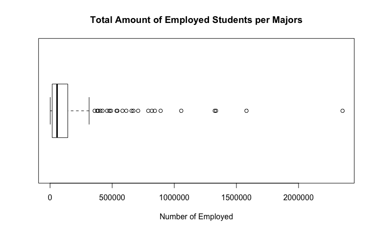

What is "Employed"?
The Employed column of my dataframe is defined as the amount of people that are employed by the major they had majored. The mean, standard deviation, skewness and kurtosis are:
Mean: 166162
Standard Deviation: 307324.4
Skewness: 3.769423
Kurtosis: 18.03576
BoxPlot and Histogram of the data "Employed"
The boxplot is similar to the Total boxplot and it helps the viewer see the pieces of data that are detached from the box's 4th quarter. The 24 outliers are the same outliers that the column Total displayed on it's own boxplot graph thus implying that the most popular major with the most total number of majors are most likely be able to seek a job than those majors that aren't as popular as they seem to be on the boxplot. These outliers had values greater than 350,000.

Similar to the Total boxplot, a positive skewness and postive kurtosis made me believe that the graph was slightly skewed towards the right and had a platykurtic curve. Yet, the histogram displayed a random distribution. The only differences i saw on the Total's histogram and Employed's histogram are the indexes. The indexes displays the number of employed/total students.
Computing a confidence interval for the "Employed" # 2:
Knowing that the mean of the data "Employed" has mean = 166162, standard deviation = 307324.4, and the dataset has a length of n = 173. We can compute the margin of error by adding/subtracting the mean from the confidence level times the standard deviation over the square root of n (230256.6 ± 1.959964 * 307324.4/sqrt(173)) which gives us the range where the true mean lands on: [120366.6, 211957.4].